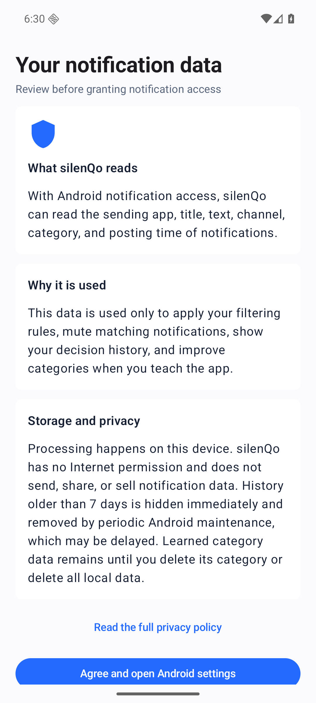
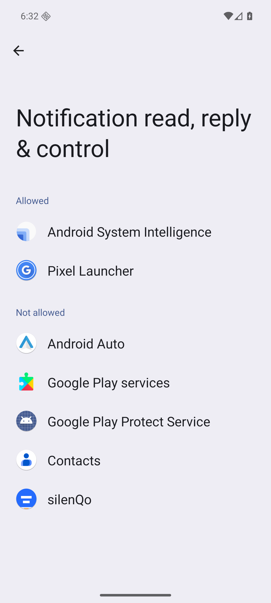
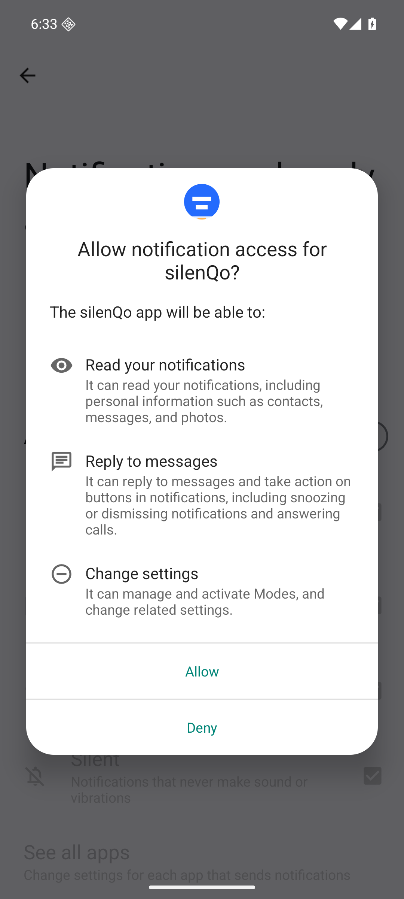
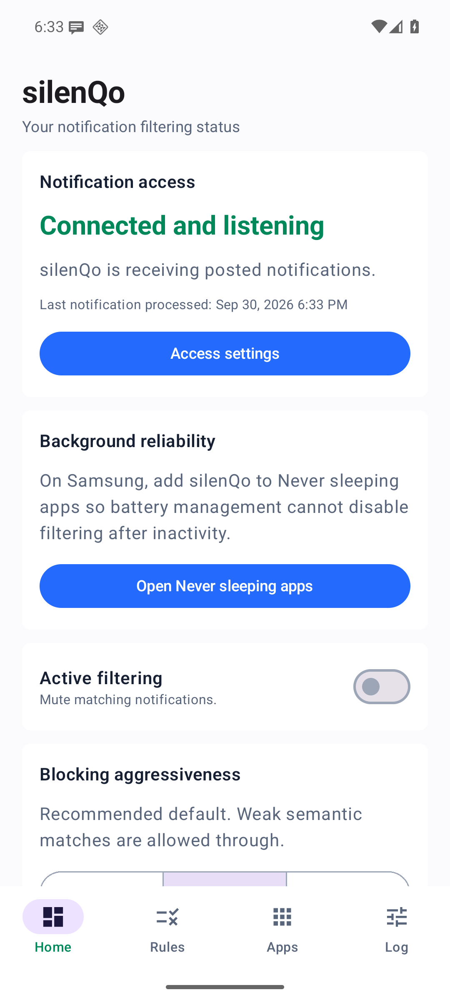
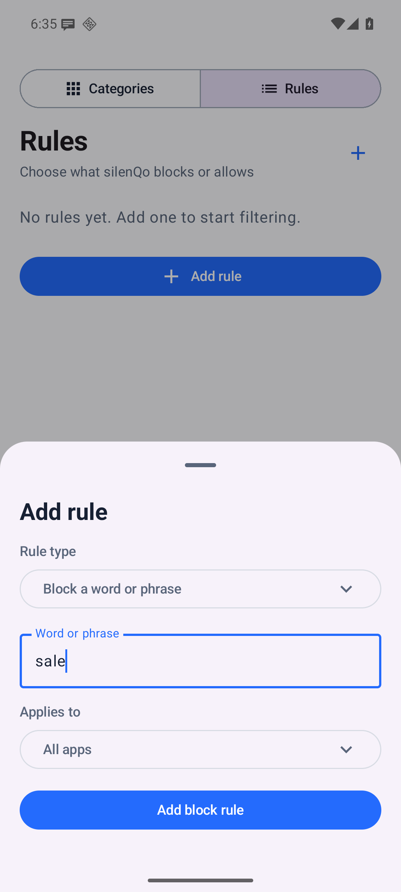
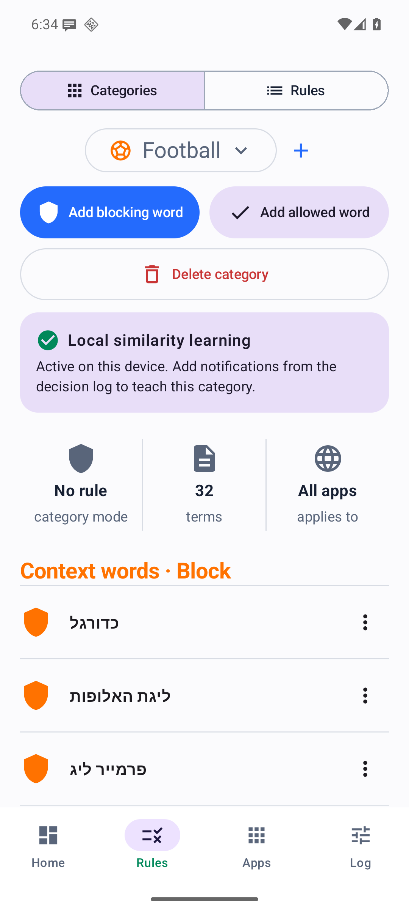
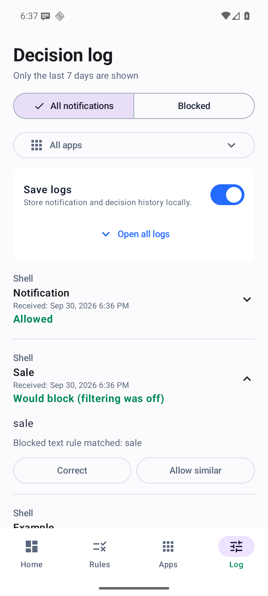
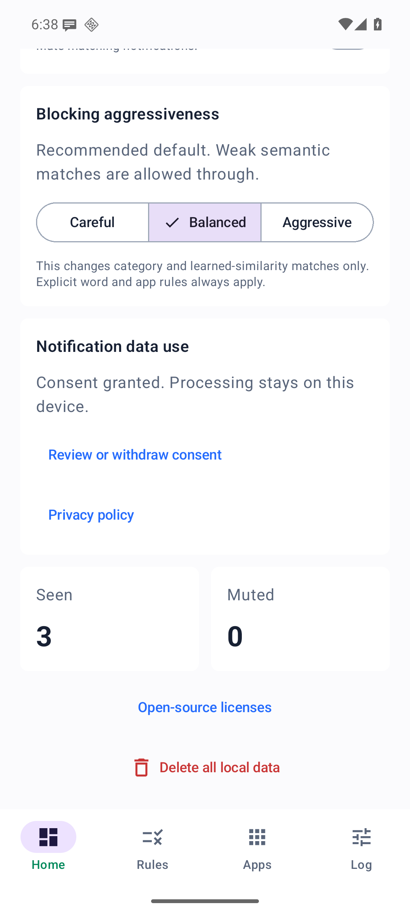

Step-by-step guide
Set up silenQo and make your first rule.
Follow the screens below to grant access, choose what to filter, and understand each decision. The screenshots come from the running Android app on a test emulator with sample notifications. Android settings may look different on your phone.
Select any screenshot to open it at full size.
01 · First launch
Review notification access.
Notification access lets silenQo read posted notifications so it can apply your rules. Both your in-app consent and Android's notification-access setting are required.
- Read Your notification data in the app. Open the full privacy policy if you want more detail.
- Choose Agree and open Android settings. In Android's list, select silenQo under Not allowed.
- Turn on Allow notification access. Android may show a confirmation explaining this powerful permission; review it and choose Allow to continue.
- Return to silenQo. The Home screen should report Connected and listening.



02 · Home
Check the connection, then choose when to filter.
On Home, look for Connected and listening. If it says Needs setup, use Access settings to check Android's permission.
- Create a rule first, using the next step.
- Turn on Active filtering when you want matching notifications muted.
- With filtering off, notifications stay visible. If log saving is on, matching rules can still appear in the log as Would block (filtering was off).
The switch stays under your control. Granting notification access does not turn active filtering on by itself.

03 · Rules
Add a word or app rule.
- Open the bottom Rules tab, then select Rules at the top.
- Tap Add rule. Choose a Rule type, such as Block a word or phrase.
- Enter a word or short phrase. Use Applies to to target All apps or one app that silenQo has encountered.
- Save the rule. The example shown uses the test word sale; replace it with your own choice.
You can also choose an allow-word rule, a category rule, or an app-block rule. The menu beside an existing rule lets you edit or remove it.

04 · Categories
Group topics and teach them.
- In the bottom Rules tab, select Categories at the top. Use the category selector to view a built-in or custom topic.
- Tap + to create a category. Add blocking words or allowed words to give it examples.
- To apply a category, switch to Rules, add a Category rule, select the category, and choose Normal or Allow-only behavior.
- When you review an expanded decision in the log, you can use its feedback controls to help teach a category.
In Normal mode, blocking words mute matches and allowed words pass. Allow-only mode requires an allowed word or example before it starts blocking unmatched notifications in scope.

05 · Decision log
See what happened and why.
- Open Log at the bottom. Leave Save logs on if you want local decision history.
- Switch between All notifications and Blocked, or narrow the view to an app.
- Tap a decision to expand it. The example shows Would block (filtering was off) because the sample word rule matched while the Home switch was off.
- Read the matching reason and use the available feedback controls if the decision needs correction.
Only the last seven days appear in the log. Android may delay the background cleanup of older local records.

06 · Your data
Review consent or clear local data.
Scroll down on Home to find Notification data use. From there you can reopen the disclosure, read the privacy policy, or withdraw consent.
- Withdraw consent stops new notification processing and turns active filtering off. It does not erase data already saved.
- Delete all local data removes local rules, categories, learning data, decision history, and preferences after you confirm.
- You can also revoke Android notification access in system settings at any time.

Need help?
Three things to check.
- If Home says Needs setup, confirm both in-app consent and Android notification access.
- If a matching notification stays visible, check the Active filtering switch and open its log entry to read the reason.
- If the log is empty, check Save logs. On Samsung devices, the Home screen also links to the Never sleeping apps setting for background reliability.
Still stuck? Email silenqosupport.agonizing647@simplelogin.com.